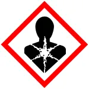
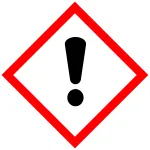
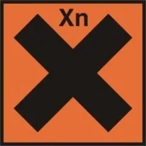
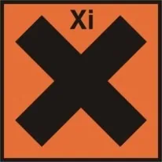

Test z abecadła fachowego sprzątania
Drabina kompetencji, obrazująca proces świadomego zdobywania kompetencji, rozpoczyna się od etapu nieświadomej niekompetencji. Osoba na tym etapie jest nieświadoma, że nie wie, że nie potrafi i nie uświadamia sobie swoich braków. Może również podważać przydatność wiedzy lub umiejętności. Ten stan odzwierciedlają m. in. reakcje kandydatów do pracy na informacje o obowiązku szkolenia z zakresu sprzątania: „A na co mi szkolenie?”; „Czego tu się uczyć? Umiem sprzątać. Sprzątałam we Włoszech 10 lat”; „Pani chce mnie szkolić ze sprzątania? Pani się ośmiesza! A ścierka, wiadro, szczotka i idę do roboty!”; „Ja nie potrzebuję szkolenia, sprzątam od 20 lat. To ja mogę Panią nauczyć””; „Szkolenie? Sprzątałam u prezesów, lekarzy i prawników i nikt się nie skarżył.”
Aby człowiek mógł się rozwijać, czyli nabywać wiedzę, umiejętności, doświadczenie, które prowadzą do trwałych zmian w jego zachowaniu, konieczne jest, aby uświadomił sobie, że jest w danej dziedzinie niekompetentny i jednocześnie docenił wartość nabycia nowych umiejętności. Jeśli jesteś zainteresowany rozwojem swoich kompetencji w zakresie profesjonalnego sprzątania, rozwiąż poniższy test z podstaw sprzątania. Mamy nadzieję, że osobom, które uświadomią sobieniekompetencję w zakresie sprzątania, test dostarczy motywacyjnego bodźca do nauki i zachęci do wspinaczki po drabinie kompetencji fachowej sprzątaczki/fachowego sprzątacza. Osoby, które mają elementarną wiedzę, uzyskają potwierdzenie kompetencji.
Każde pytanie zawiera tylko jedną prawidłową odpowiedź
1. Które zdanie na temat sprzątania jest poprawne?
a) Sprzątanie to czyszczenie i porządkowanie
b) Celem sprzątania jest utrzymywanie/przywracanie obiektom pożądanego standardu estetycznego i higienicznego
c) Profesjonalne sprzątanie służy utrzymaniu wartości wyposażenia i obiektu
d) Wszystkie odpowiedzi są poprawne
2. Kod kolorów w branży czystości to:
a) Zaszyfrowane przeznaczenie ścierek i innych materiałów czyszczących, w celu ukrycia ich funkcji przed osobami spoza firmy sprzątającej
b) Przyporządkowanie ścierek innych materiałów czyszczących do czyszczenia określonych powierzchni obiektu
c) Kolorystyczny znak rozpoznawczy firmy sprzątającej
d) Wszystkie odpowiedzi są nieprawidłowe
3. Czemu służy zastosowanie kodu kolorów w sprzątanym obiekcie?
a) Eliminuje lub zmniejsza ryzyko przenoszenia drobnoustrojów chorobotwórczych
b) Zapobiega uszkodzeniu powierzchni, np. monitora komputera
c) Zabezpiecza przed zamianą ścierek
d) Każda odpowiedź jest poprawna
4. Wybierz sposób czyszczenia powierzchni, który zapewnia największy efekt higieniczny
a) Metoda kuwetowa
b) Mycie przy pomocy jednego wiadra
c) Metoda dwu wiaderkowa
d) Metoda dwu wiaderkowa uproszczona
5. Ile ml koncentratu myjącego należy wlać do 1 litra wody, aby otrzymać rozcieńczenie 1:500?
a) 500
b) 50
c) 20
d) 2
6. Który z wymienionych roztworów myjących jest bezpieczny dla marmuru i nie spowoduje jego przebarwienia lub zmatowienia?
a) Roztwór o pH w zakresie 6-8
b) Zawierający ocet
c) Roztwór o liczbie pH wyższej niż 10 i niższej niż 5
d) Wybielacz
7. Które z wiader w systemie dwu wiaderkowym służy do zbierania zanieczyszczeń?
a) Oba
b) Czerwone
c) Niebieskie
d) Żadne z wymienionych
8. Jak się nazywa jedno z dwóch polskich czasopism poświęcone branży czystości
a) ABC sprzątania
b) Czystość w domu i biurze
c) Profesjonalna sprzątaczka
d) Firma sprzątająca
9. Które z poniższych zdań na temat karty charakterystyki substancji niebezpiecznej jest prawdziwe?
a) To zbiór informacji o niebezpiecznych właściwościach substancji lub preparatu
b) Określa zasady i zalecenia niezbędne do zapewnienia i bezpiecznego stosowania substancji lub preparatu
c) Każdy producent, importer lub dystrybutor substancji/mieszaniny niebezpiecznej jest zobowiązany nieodpłatnie dostarczyć odbiorcy kartę charakterystyki najpóźniej w dniu pierwszej dostawy
d) Wszystkie stwierdzenia są prawdziwe
10. Jakimi preparaty są szczególnie skuteczne przy usuwaniu smarów, olejów i tłuszczów?
a) O pH w zakresie 0-5
b) O pH w zakresie 9-14
c) O pH neutralnym
d) Wszystkie odpowiedzi są poprawne
11. W jakiej strefie higienicznej, w/g stosowanego w branży czystości kodu kolorów, mają zastosowanie ścierki w kolorze żółtym?
a) Strefa brudna w toaletach
b) Strefa czysta w toaletach
c) Wyposażenie biurowe
d) Kuchnia lub sale operacyjne
12. Kamień i rdzę usuniemy
a) Substancją/mieszaniną o odczynie zasadowym
b) Substancją/mieszaniną o odczynie kwaśnym
c) Substancją/mieszaniną zawierającym alkohol
d) Wszystkie stwierdzenia są prawdziwe
13. Efektywne mycie i bezpieczne dla parkietu i paneli, zapewni mop
a) Płaski pętelkowy
b) Płaski cięty
c) Kentucky
d) Paskowy
14. Ile stref higienicznych należy wyodrębnić w łazience z muszlą klozetową, aby zapewnić higieniczne czyszczenie?
a) Wystarczy jedna
b) Co najmniej dwie
c) Tyle, ile jest elementów wyposażenia
d) Tyle, ilu jest osób korzystających z ustępu
15. HEPA to element wyposażenia
a) Odkurzacza
b) Szorowarki
c) Parownicy
d) Polerki
16. Z ilu stref powinien składać się efektywny system mat wejściowych?
a) 1
b) 3
c) 6
d) wszystkie odpowiedzi są prawidłowe
17. Wybierz aktualnie obowiązujący w Polsce, Unii Europejskiej i kilkudziesięciu krajach ONZ, piktogram substancji niebezpiecznej, który ostrzega przed substancją/mieszaniną poważnie zagrażającą zdrowiu
a)

b)
c)
d)
18. Ile ml koncentratu dezynfekującego należy wlać do wody, aby otrzymać 5 litrów 1% roztworu dezynfekującego tego koncentratu?
a) 50 ml
b) 5 ml
c) 60 ml
d) 6 ml
19. Czyszczenie, to przede wszystkim zabieg
a) Chemiczny
b) Mechaniczny
20. Zaletą systemu dwu wiaderkowego jest
a) Wielokrotna oszczędność chemii i ochrona środowiska
b) Ograniczenie transmisji zanieczyszczeń, w tym drobnoustrojów.
c) Zwiększenie efektu wizualnego czyszczenia
a) Wszystkie stwierdzenia są prawdziwe
21. Wybierz czynniki, od których, wg teorii Sinnera, zależą koszty i skuteczność czyszczenia
a) Mechanika, czas, temperatura, chemia
b) Kalkulacja, oferta, umowa, zakres pracy
c) Epidemiologia, mikrobiologia, higiena, strefa higieniczna
d) Materiałoznawstwo, maszynoznawstwo, BHP, ppoż
22. Który z zabiegów usunie co najmniej 80% drobnoustrojów z czyszczonej powierzchni
a) Mycie wodą ścierką z mikrowłókna
b) Mycie ścierką z mikrowłókna roztworem detergentu.
c) Parowanie
d) Wszystkie odpowiedzi są prawidłowe
23. Jakiego koloru jest pad, który, wg najbardziej popularnej skali agresywności padów, przeznaczony jest do zdzierania starych zabrudzeń i powłok ochronnych?
a) Biały
b) Czerwony
c) Zielony
d) Czarny
24. Mopy akrylowe stosuje się do
a) Mopowania na sucho
b) Mopowania na wilgotno
c) Mopowania na mokro
d) Dezynfekcji
25. Ile razy należy złożyć ścierkę, aby totalnie wykorzystać jej powierzchnię podczas czyszczenia powierzchni i sprzątać higienicznie?
a) 1 raz
b) 2 razy
c) 10 razy
d) 20 razy
26. Które zdanie na temat czyszczenia powierzchni metodą kuwetową jest błędne?
a) Nie wymaga preparowania mopów
b) Służy do mycia ścierką lub mopem „jednego kontaktu”
c) Wymaga dwóch pojemników
d) Stosowana jest przy myciu i dezynfekcji
27. Które z poniższych zdań na temat mikrowłókna, jest prawdziwe?
a) Składa się z dwóch rodzajów włókien syntetycznych
b) Jest tak cienkie, jak ludzki włos
c) Przy użyciu na mokro elektryzuje się
d) Butwieje
Na stronie nie podajemy prawidłowych odpowiedzi. Kto wie, to wie. Zapraszamy na szkolenia.